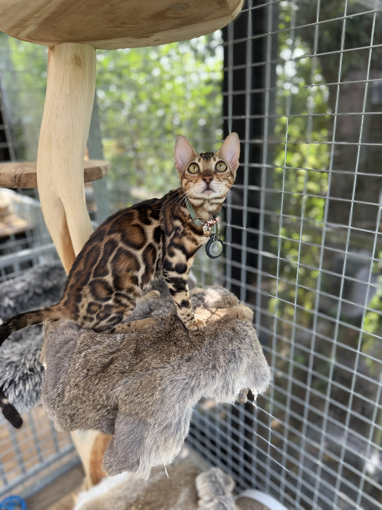
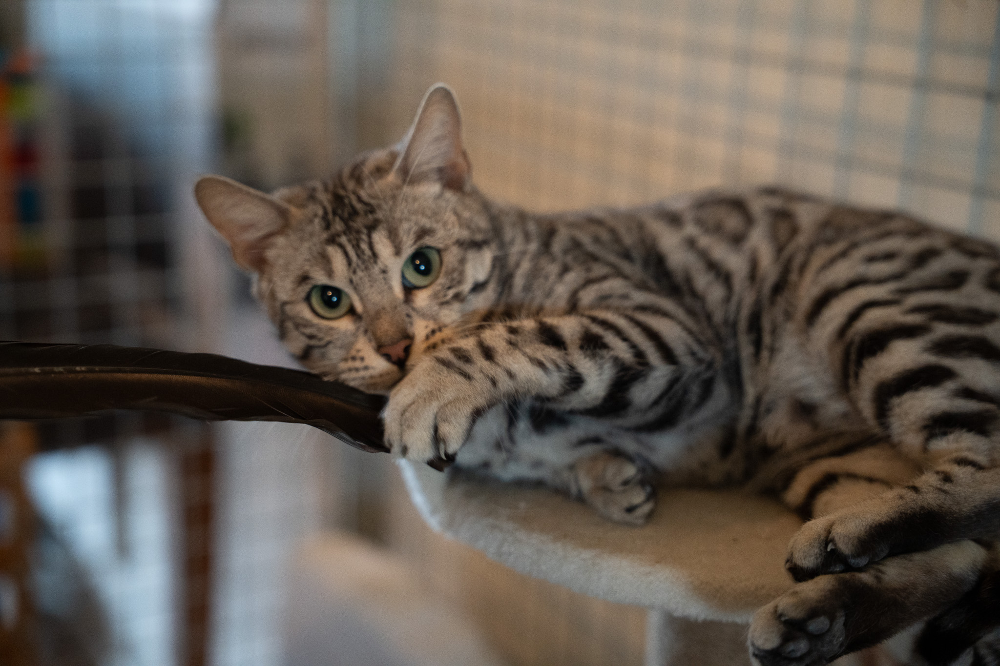
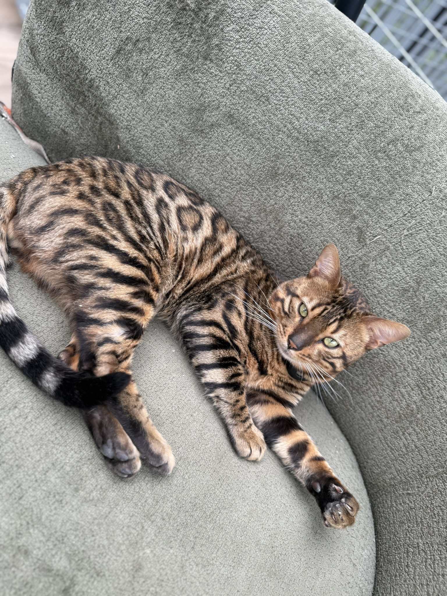
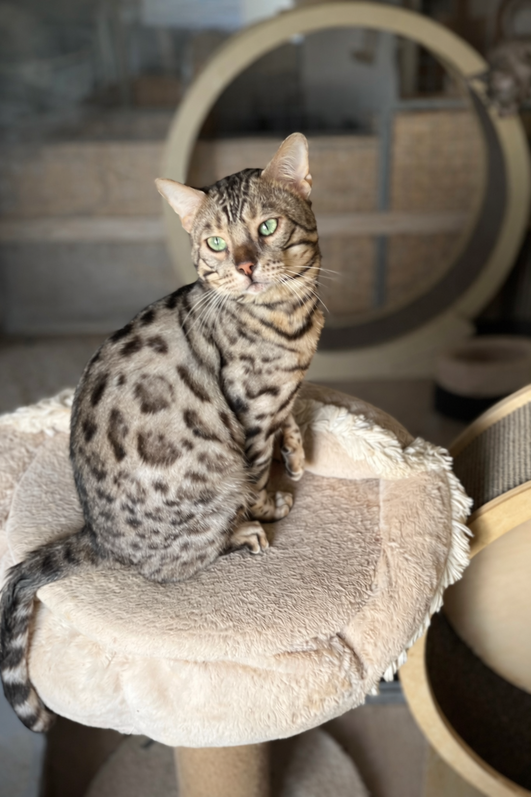
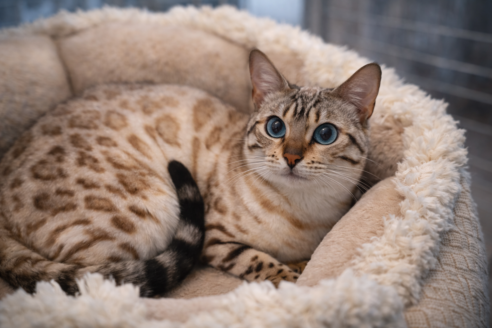

Estela
Onze bengalen
Onze bengalen worden zorgvuldig gekozen op uitstraling, gezondheid en temperament. We houden van rijke warme tinten, helder zilver en een expressie waarin zachtheid en levendigheid samenkomen.
Onze bengalen

Estela

Hannah

Harry

Loki

Nina

Panamera
Karakter
Bengalen zijn alert, speels en sterk betrokken bij hun omgeving. Juist daarom vinden we evenwicht in karakter zo belangrijk.
We houden van duidelijke contrasten, zachte glans in de vacht en een elegante lichaamslijn die kracht en souplesse uitstraalt.
Zowel warme bruine bengalen als verfijnde zilveren bengalen mogen binnen onze stijl volledig tot hun recht komen.